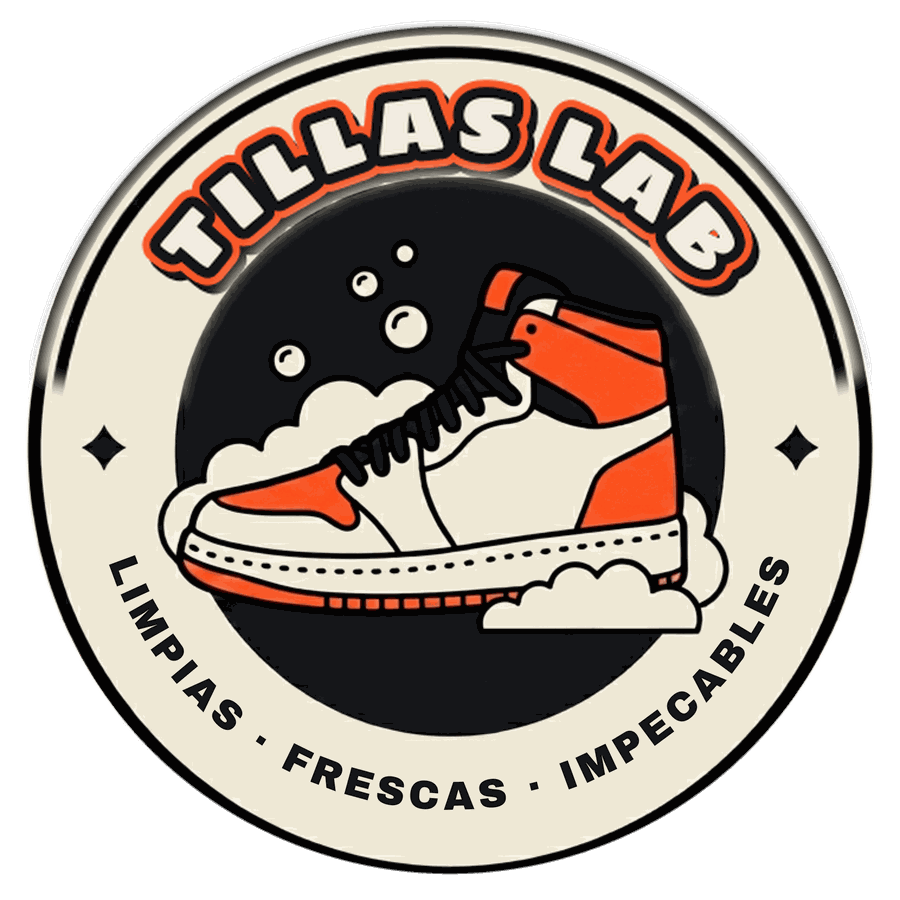

Nos contactás
Nos escribís por cualquiera de nuestros canales de atención: WhatsApp, teléfono, Instagram o Facebook. Un colaborador agenda tu pedido.
También podés venir personalmente y dejarnos los pares
Lavado y desinfección de zapatillasEn Tillas Lab nos dedicamos a la limpieza y el cuidado profesional de zapatillas. Pasamos a buscarlas por tu domicilio, realizamos una limpieza profunda con productos y herramientas especialmente pensados para calzado, y te las devolvemos impecables, listas para volver a usar.
Abrimos el 1 de septiembreDeslizá para ver la diferencia
Con nuestro servicio te olvidás de la irritante tarea de lavar tus zapas o las de la familia, y de que nunca salgan esas manchas rebeldes o no queden como uno quisiera. En Tillas Lab somos especialistas en el lavado de zapatillas de todo tipo: tenemos equipos, máquinas, productos y colaboradores pensados para eso. Todo junto no solo da un resultado mágico, sino a tiempo récord y sin moverte de donde estés.
Nos escribís por cualquiera de nuestros canales de atención: WhatsApp, teléfono, Instagram o Facebook. Un colaborador agenda tu pedido.
También podés venir personalmente y dejarnos los paresEn el caso de que debamos retirar por tu casa, un colaborador pasa por donde estés, retira el o los pares y los trae al negocio para empezar con el proceso de lavado, desinfección y secado.
Retiro incluido en el precioLuego de aplicar el proceso de lavado, desinfección y secado, las zapas quedan listas para que las busques o para que un colaborador te las lleve al lugar que hayan pactado.
Todo el proceso es en el día · Express en un par de horasRegistramos el estado inicial de tu par. Vos recibís el antes y el después.
Sacamos tierra y barro superficial antes de que toque una gota de agua.
Máquinas hechas para calzado, con el programa y los productos que pide cada material.
Luz ultravioleta sobre el par ya lavado, por dentro y por fuera.
Sin sol directo ni secarropas, para cuidar la forma y el color.
Revisión punto por punto, perfumado y embalaje antes de la entrega.
Te ofrecemos dos tipos de servicio según tus tiempos y tu necesidad. Precios finales por par, con retiro y entrega incluidos.
El lavado completo: por fuera, por dentro y la suela.
$8.000 por par
Se retiran en el día y se entregan en el día o al día siguiente, según la hora en que se solicite el servicio.
Pedir regularLo mismo que el regular, con prioridad en el taller.
$10.000 por par
Se retiran en el día y se les da prioridad para que se entreguen a las dos horas.
Pedir expressEl área marcada en el mapa es donde el retiro y la entrega están incluidos en el precio. ¿Tu barrio queda justo afuera? Escribinos igual y lo coordinamos.
Prácticamente todas: tela, malla, sintético, cuero, gamuza y nobuk. Cada material tiene su técnica y sus productos. Si tenés dudas por un par puntual, mandanos una foto por WhatsApp y te decimos qué tratamiento le corresponde.
No. Usamos máquinas hechas para calzado, con cepillos, productos, temperaturas y tiempos pensados para cada par. Eso da un resultado parejo y una higiene que a mano no se consigue. El material más delicado, como la gamuza o el cuero, se trabaja de distinta manera, con otras técnicas y otros productos.
Siempre tratamos de que los pares salgan listos dentro del mismo día en que el cliente hace el pedido. Hay que tener en cuenta que algunos pares necesitan más tiempo de trabajo, aunque son un porcentaje menor, y que también influye el horario del día en que se haga el pedido. Nuestros colaboradores van a poder asesorarte sobre los tiempos exactos en el momento de tu consulta, antes del retiro.
No. Dentro del Gran San Miguel de Tucumán están incluidos en el precio del lavado. Si estás fuera de la zona, consultanos y vemos cómo coordinarlo.
Si en el proceso de lavado hay alguna mancha fuerte, como pintura, químicos o amarilleo profundo, que se atenúa pero no llega a desaparecer, un colaborador se comunica con vos para explicarte el proceso realizado, el detalle que se identificó y no se pudo sacar, y los químicos recomendados. Así quedás informado y sabés al detalle el estado de tu par.
Vamos a habilitar diferentes plataformas de pago para tu comodidad: billeteras virtuales, tarjetas de crédito y Apple Pay. Vas a poder pagar fácilmente en el momento de realizar el pedido.
Cada par entra con una ficha numerada y fotos del estado inicial. Te mandamos el antes y el después por WhatsApp cuando están listas.
Los diez primeros que se acerquen con un par se llevan el lavado sin ningún costo. Es por orden de llegada y solo en el local: no corre por WhatsApp ni con retiro a domicilio. Te esperamos en Córdoba 1197, primer piso, oficina 7, San Miguel de Tucumán. Les vamos a pedir una foto para el recuerdo.
Preguntar si quedan lugaresTerminados los diez lavados gratis, los cincuenta clientes siguientes pagan la mitad. Vale con retiro y entrega a domicilio incluidos.
Reservar mi lugarEscribinos por WhatsApp y coordinamos el retiro por tu casa. También podés acercarte y dejarnos los pares que necesites lavar.
Pedir retiro